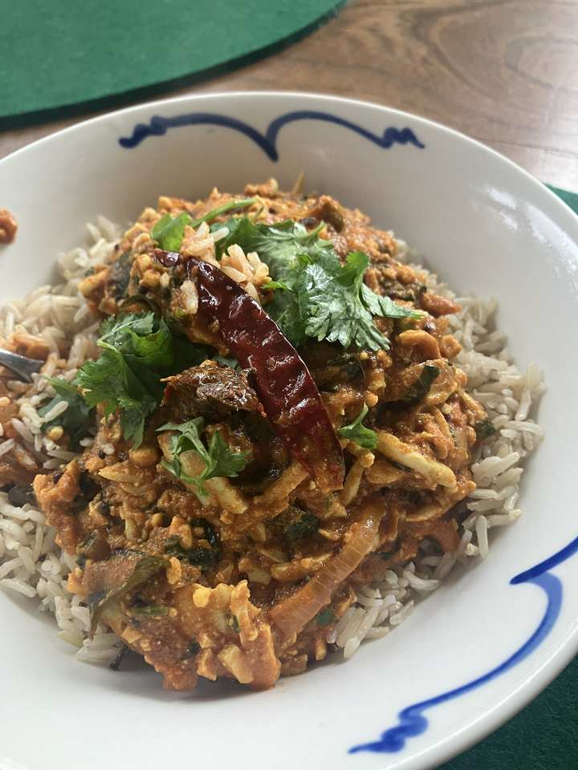

Hard boil 4 eggs (10min)
Fry in oil
Onion, garlic, green chilli
Tsp mustard seeds, curry leaves, 2 dry red chilli
When onion just turning brown
Add 4 medium chopped tomatoes, or paste (1/2 tube)
Add 1 tbl cumin, 1/2 tsp turmeric, 1 tsp masala (egg / garam), salt and pepper
2 min
Add water to bring to thin (eg 1cup). Reduce.
10min or so
Taste. Adjust spice.
Grate egg.
Add to pan.
5 min
Add water if needed.
Add handful chopped coriander.
Serve…. With roti/rice etc.
And a coffee!